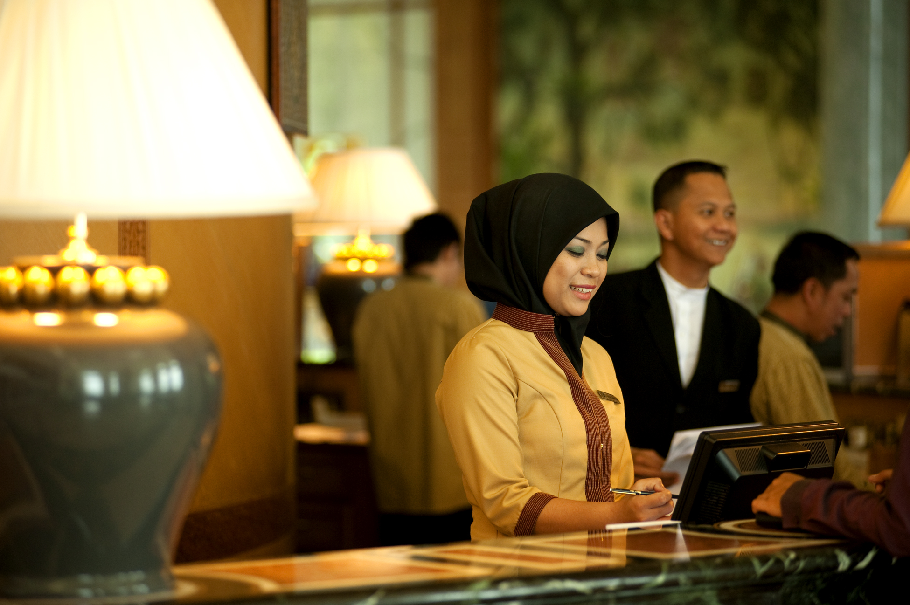

Jerudong BG3122,
Negara Brunei Darussalam
Tel: + 673 241 8888
Fax: + 673 241 8999
Email: info@theempirehotel.com
Tel: + 673 241 8222
Fax: +673 241 7815
Email: countryclub.reception
@theempirehotel.com
From conception to completion, The Empire Hotel and Country Club was an ambitious project, employing over 300 highly skilled designers, technicians and craftsmen throughout its six-year construction. Since it opened on 16 October 2000, The Empire has become synonymous with Brunei: reflecting the country's majestic and cultural heritage.

Today, The Empire Hotel and Country Club is managed by a highly experienced team of dedicated professionals. Supported by the wisdom of a mainly Bruneian Board of Directors, they inspire more than 800 employees to uphold the special characteristics that have become recognised as being unique to The Empire.
Credentials:
The Empire Hotel and Country Club is a member of WORLDHOTELS and is dedicated to empirical standards of quality, service and style.
We work with discerning travel agents, wholesalers and tour operators who wish to offer their clients incomparable holiday experiences. As such, we welcome the opportunity to form new relationships with like-minded parties and feature a variety of attractive commissionable packages and negotiable contract rates.
For further information, please email: sales@theempirehotel.com